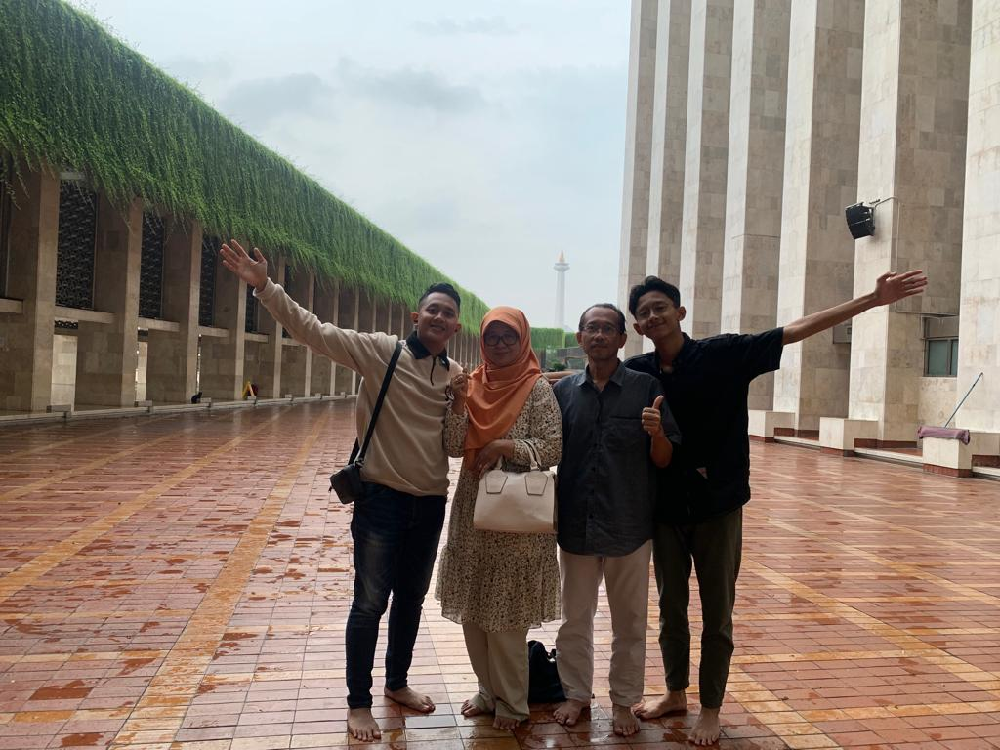

profesi programmer telah menjadi salah satu profesi yang paling dicari dan berpengaruh dalam era digital saat ini.
Namun, dengan perkembangan teknologi yang terus berlangsung, masa depan para programmer dipenuhi dengan tantangan yang perlu diatasi,
sekaligus peluang yang menarik untuk dieksplorasi. Karya ilmiah ini menguraikan perkiraan tentang masa depan profesi programmer,
memperhitungkan tren teknologi terkini dan implikasi sosial yang mungkin timbul.
Dunia programming adalah ladang yang luas, dipenuhi dengan bahasa yang beragam, konsep-konsep yang kompleks,
dan tantangan yang menarik. Bagi seorang pemula, memasuki dunia ini bisa terasa seperti memasuki labirin yang tak berujung.
Namun, di tengah semua itu, terdapat kisah-kisah inspiratif tentang bagaimana seseorang yang awalnya sama sekali tidak mengenal coding,
bertransformasi menjadi seorang programmer yang mumpuni.
Data Tentang Penulis
